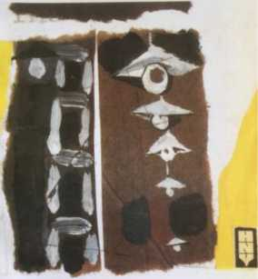

Chao ơi! Con đường đê đi đến chỗ 'Đúng' mới nhiêu máu làm sao? Tương lai có để dành cho tôi nhát dao nào nữa không?"
11/6“
... Quãng ngày mà mình cảm thấy mình "vô ích". Tôi chờ đọi "đi lâu dài". Những nguôi nằm ở "tạm trú xá" chờ công tác, chắc có tâm trạng na ná tôi.
Ở Chí Linh về, chúng tôi dự hội nghị tổng kết, và học kế hoạch 3 năm. Xong rồi, tôi ăn một cái Tết tuy túng thiếu song vui và thoải mái hon tất cả 3, 4 cái Tết đã ăn từ ngày Hoà bình.
Rồi, giữa cảnh Xuân mới, tôi đi Nam Định, để sáng tác. Lúc đó, có vụ Phú Lọi 1 2 , cả nuớc sôi lên một sự phẫn nộ chua từng có. Tôi viết đuợc một bài về cuộc tuần hành phản đối Mỹ Diệm... Liền đó tôi làm bài "Con tầu xã hội". Nó là một cái mốc trong đời tư tưởng của tôi. Nhiều ý kiến lắm, song tôi vẫn thích bài ấy, vì nó là "Trần Dần 59".
Thế là hết việc. Ròng rã ngót nửa năm rồi. Tôi chỉ thấy tôi "có ích" trong mấy việc đó thôi. Ngoài ra làm gì? Chỉ có: chờ đọi. Và chờ đọi...
Bắt đầu, khi lãnh đạo đồng ý cho tôi và cả gia đình về Nam Định thì người tôi nó lạ lắm. Lo âu, xen lẫn thú vị, và tất cả nhuốm một chút buồn tủi... Vợ tôi cũng được về: tham quan nhà máy dệt. Chiếc xe đạp vui buồn của tôi bán được 36 vạn, đem chi dùng cho sự túng thiếu hàng tháng, và cho cuộc đi choi Nam Định này... Vợ tôi trở về thú vị, hết cả lo âu khi đầu, mà chuyển sang cái lo khác: liệu có được nhận vào nhà máy dệt không? Vợ tôi chì mong chóng đi. Giục tôi "đề nghị các ông trên" luôn mồm.
Cảnh sống mói "công nhân hoá" dần dần hiện ra vói tôi đầy hấp dẫn. Sáng tác, nghệ thuật, tiền đồ, tư tưởng, v.v... tất cả ở đó! Vợ tôi coi đó là một lối thoát, được sống ra ngoài đống tã lót cứt đái gia đình. Tôi cũng muốn vợ tôi được đi làm, được học hành. Con cái sẽ sung sướng hon. Cảnh nhà sẽ đỡ bâh hon, vui hon, lành mạnh hon. Tôi-gia đình-xã hội sẽ không còn hàng rào. Có thê' nói "một cuộc kết hôn tay ba" mà êm thắm.
Viễn vọng ấy ngày một "nên thơ" mãi lên. Nó thu hút, thu hút... Không được nó, sẽ như thất tình! Chưa được nó, chậm được nó, cứ như là đang yêu mà chưa chắc được yêu! Như là đã gửi thư đi, mà nguôi gái kia chưa có trả lời! Như là mối tình đầu, dam mê hon rượu mạnh, chưa tói màn kết, đang diễn biến hồi hộp và đau khổ!
Tôi đang nằm trong nanh vuốt của tình thế này. Mỗi ngày trôi, nặng hơn ngày trước. Việc vặt gia đình ray rứt, gậm nhấm. "Hàm răng chuột nhắt của gia đình", cộng vào đó "hàm răng khổng lồ của chờ đợi". Có những lúc chán nản, thấy cái vô bổ của thời giờ, của thân phận. Có những lúc cáu giận thình lình. Trời tháng Sáu (tây) nóng dữ. Đường nhựa, nhà ngói,... lửa hè nó cứ ngún trong đống đường nhựa nhà ngói. Nó ngún trong người. Châm lên những nỗi tức giận kỳ lạ... Trời cứ 33 độ, 39 độ... Nhiệt độ tâm lý của tôi có lúc phải tới 1000 độ. Còn thường thường cũng phải vài trăm độ. Tôi có cảm giác một con tầu mise en CỊuarantaine.
15/6
Hàn thử biêù đặt ở một góc nhà, chỗ râm mát nhất, ngay đầu giường, cạnh cái tủ đứng: quanh năm ánh sáng không tói thăm xó tối này! Hôm hàn thử biểu chỉ 33 độ, hôm 33,5 độ, cứ thế giằng dai. [...] Hà Nội đã thành một cái lò nung người. Lửa bốc từ đường nhựa, gặp cái vung nhũng mái ngói, lại hâm xuống. Nắng từ bình minh đến hoàng hôn. Tắt nắng rồi, thở ra còn hơi lửa. Hàng chục vạn sinh linh bị nấu ninh trong cái oi nồng kinh khủng này. "Giống đực giống cái" (Nguyễn Tuân) bò lê bò càng. [...] Gian phòng tôi ngộn đồ đạc, đâu cũng nệm bông, thật là quê hương của sự nóng!
24/6
Gặp ông Cương. Sự nóng ruột xui tôi đến. Đi đâu? Bao giờ đi? Bao giờ học để đi? Thời gian đi như một thằng ăn cưóp phi ngựa. Thoáng cái đã đầy năm, kể từ ngày bị kỷ luật. Tôi chưa làm được cái gì có thể quyết định một chút. Cho nhẹ bớt cái gánh kỷ luật. Nằm chờ làm cho hình phạt đè nặng hơn trên tâm hồn. Đè mãi; đeo không nổi tội.
Ông Cương bảo, độ tuần sau phổ biến chính sách cho anh em, độ vài ngày thôi, để anh em đi. Còn riêng trường hợp bọn tôi, thì hôm nọ có bàn, có nên để ở gần Hà Nội, một cái xưởng nào đó, thì gần gũi lãnh đạo hơn, học hành hoặc cần gì, tiện hơn!
Thế nào cũng được. Tôi chỉ đang mong được làm một cái gì, không phải nằm chờ trường kỳ mãi như thế này.
25/6
Được non tuần nay, trời đấu dịu. [...] May! Ông Sukarno 3 tói thăm ta, vào dịp những ngày mát. Hà Nội như mở hội. Cờ treo 5 ngày. Đèn chăng các công sở, vườn hoa. Rộn rịp các đám múa sư tử, múa lân, diễu các phố. Những ngã tư lớn đều có trò chơi mua rối hoặc kịch. Rồi thì meeting. [...]
26/6
Mãi đến hôm nay, mẹ nó mới hoàn toàn tự nguyện đồng ý về cái mục: ăn com hiệu. Từ lâu tôi đã đưa ra cái kiến nghị ấy. Đê’ có thì giờ làm việc khác. Vả đỡ tốn hơn.[...] Hãy tính sơ ra mà xem: 1 tạ cúi 80 đồng, gạo: 160 đ, nuớc mắm 5 đ...
[...] Tôi bèn đến quán miền Nam phố Hai Bà Trưng, xế cửa hiệu sách Nhân Dân. [...] Đặt luôn 2 suất ăn chung 180 đ. Vị chi 1 tháng mất có 360 đ. Ngon không ngon chưa biết. Biết là rẻ hẵng. [...]
Gặp NgĐThi. Anh nói rõ về mục hướng đi của bọn tôi. Đi quanh Hà Nội thôi. Vì đi xa vấp nhiều vâh đề thực tế. Nhà ở. Di chuyển, v.v... Địa phương thì bận sản xuất. "Quản lý văn nghệ sĩ" mà không có vâh đề gì họ cũng còn ngại! Nhỡ anh em đi, tốt không sao, e có sự hiêù râm gì đâm khó. Hon nữa, đi xa tận đâu đâu, khó giúp đỡ theo dõi. Còn gia đình thì cũng sẽ giải quyết công ăn việc làm. Anh nói: cố làm trong tháng 7 là xong.
- Chắc LĐạt thì thú vị, NĐThi cười. Anh ta đang lo đi xa. Tôi trở về. Có cái vui. Cũng có cái lo.. Không hiểu sao, xa Hà Nội tự dưng vẫn gây ra nào nhớ, nào buồn, nào tủi nữa. Có cái gì như thể "di cư"! Vậy ở Hà Nội rồi! Nghe như đòi mình bớt đi được một sự đổ vỡ. Khỏi có gì lật đảo trong cuộc sống riêng.
Song Hà Nội có một cái đáng ghê lắm: nó có cái tài rất ma quỷ là tài đánh loãng anh ra. Một cái biển người mà anh chỉ là một chiếc bách nổi nênh. Anh rất dễ bị động với những cái thú vui lặt vặt, những phố xá, điện đèn, những cám dỗ cúa sự ra đường chìm giữa đám đông... Ớ Hà Nội này, anh khó gặp người cần gặp. Khó dò sâu nhũng tâm sự cần dò sâu. Anh phải có con mắt thấu thị lắm, có khả năng tập trung ý tình lắm, mới có thể dompter được Hà Nội. Nó cứ như một cô nhân tình quái ác, tinh ma. Đó, từ cái matière rebeỉle, fluide, phức tạp như thế, anh phải nhằn cho ra được nghệ thuật! Nó có nghệ thuật chứ, nhrr đồng ruộng, như bất cứ nơi đâu. Chỉ khác cái là khó nhằn.
28/6
Chủ nhật
Ăn com hiệu khó ăn quá. 4 bữa rồi. Cơm thổi khô, gạo chiêm, thứ chiêm xấu, đen. Thức ăn: 1 bát canh rau ngót nấu suông, với một chút (đúng là một chút) rau muống xào và độ 4,5 miếng thịt trâu kho mặn, nằm co ro một góc cà mèn. [...]
Song, cũng đành. Vì chỉ có cách ăn như thế, là rẻ nhất. Nó có ngũ’. Gọi nôm là: ăn khổ. Nó còn khổ hơn ăn cơm đầu ghế ngoài chợ. Com đầu ghế thực ra ngon hơn nhiều. Có tí dưa. Có các món hợp khẩu vị, chẳng hạn canh cá, canh cua, canh dưa, đậu phụ rán, v.v... Đằng này, nó là một thứ tiểu tư sản chẳng ra đầu ra cuối gì. Cũng nhạt nhẽo như tất cả mọi cái gì tiểu tư sản.
Cái tin "đi thực tế quanh Hà Nội" đến vói mỗi người bọn tôi một khác. LĐạt, TPhác khoái thành thật. PhQuán thì kêu là: không sáng tác được! Còn ĐĐHưng.
- Ghê đấy! Hung nói.
- Sao?
- Ghê đấy. Surveiller de près.
- Thế lại hơn. Tôi nói. Không có cứ nghi nghi ngờ ngờ. Lắm thứ lắm.
Lát sau Hưng mói nói:
- Kể ra cũng có cái thú khác.
Đối anh tin này cũng có mặt thú ấy: gần gia đình, gần đàn. Anh không thích, về cái mặt anh cho rằng lãnh đạo còn nhiều nghi kỵ. Ý kiến LĐạt khác hẳn:
- Thế là rộng hơn chứ. Tích cực cải tạo mà.
30/6
Năm ngoái, đúng ngày này, cu Còm khai sinh. [...] Một năm đã qua đi. [...]
Tháng 11
Mấy tháng đã qua đi. Đã chết một mùa Hè. Đã khai mạc: mùa Đông. Nhưng cùng với mùa rét của thiên địa đó, thì riêng trong chúng tôi - phân tử Nhân văn các loại - lại như là có gì na ná mùa Xuân.
Tôi gọi là tuyết tan. Tức là, có lẽ lãnh đạo có chủ-trương-tan-tuyết. Có lẽ?... Bằng chứng là: trong chính sách đối đãi có thêm một điểm: sử dụng! Trước thì chỉ vẻn vẹn có: cải tạo lao động và cải tạo chỉnh huâh! Thế là có khác chứ? Một vài ví dụ: ĐĐHưng: dịch ở Hội Nhạc. TPhác: thủ thư viện ở Liên hiệp Hội, anh chàng xếp sách, đánh chuột và gián, và thú vị vói công tác, đâu đã được biểu dương! Tôi vói LĐạt: dịch ở Hội Nhà văn. Phòng làm việc chúng tôi ở ga-ra, yên tĩnh lắm, nhòm ra sân có một cây khế, cây ổi tầu, một giàn nho. Nguyễn Khắc Dực: dịch... v.v... Đa số là dịch! Một thứ "dịch" dịch.
Tôi mói làm thêm bài thơ "Sắc lệnh 59". Bài này có điểm khoái: về điệu, về tứ, và lời có cái mói. Tôi tự gọi là một thứ ỉimpidité picỊuante\ Hoặc limpidité assommantel Một thứ trong sáng của người nếm trải!... Một điểm đáng ghi: đại ý có câu "tôi gọi Diệm như gọi: Luluì như gọi: Mực!" thì -theo LĐạt khoái trá rapporter lại! - ĐĐHưng bèn "cắn" cho tôi một miếng ngập răng! Hưng nói: "Diệm nó dùng anh như dùng con chó ấy! Chứ bàn thờ nào?"
Evènements trong mấy tháng qua:
- Đồng chí Kờ-rút-sốp đi thăm Mỹ, một cuộc đi écỉatant.
- Trạm khảo sát tự động khoảng không các hành tinh chụp ảnh phía sau mặt trăng. Người ta nói: đã vào thế kỷ 21!
[...] Đài thiên vănbáo lầm gió bấc, lầm 3,4 lượt, mà cái gió "phải gió" ấy cứ lần lữa mãi không đem rét đến! Có cái gì như bệnh quan liêu trong chuyển vận nóng lạnh rồi. Mùa Đông đúng là một mùa Hè mượn danh.
28/11
Hôm nay thì rét thực thà rồi. Thằng Còm, con Kha ốm la liệt: sốt trở tròi và răng. Tôi vẫn đi về, hai buổi Hội Nhà văn. Ga-ra làm việc bây giờ phải đóng cửa chống rét và bật điện chống tối. Thêm một sinh linh nữa: Phùng Cung. Anh chàng in rô-nê-ô. Làm việc, anh có hứng thú, song cái bộ diện tâm hồn anh chàng còn lắm vâh đề. Tôi muốn gọi đó là thứ "vô chính phủ của một kẻ đao thước", "vô chính phủ đường phố".
Tôi "thi công" bài thơ Ngoại ô tôil Chữ ấy, do PhQuán đặt ra, học ở Việt Trì... Bài thơ này, tôi mường tượng là một ưu-phẩm của tôi. Tôi muốn tổng kết một thòi kỳ lịch sử quan trọng, thời kỳ bản lề nhu thường nói, độ vài chục năm biên thùy hai chế độ. Tôi tảo mộ tuổi thơ ấu, tuổi thành niên cúa tôi. Tảo mộ một thế hệ thanh niên đã qua. Tảo mộ nhũng đau thương và chứng tật cũ! Một cuộc học ôn lại... Người vói người. Thuở ấy thế nào? Bạn, tình yêu? Những guồng máy tình cảm phụ thuộc nhà nước thế nào? Xã hội bổ dụng người ra sao? Tình yêu còn nằm ở đâu? Ai duy trì: nhân tính, đạo đức, chân lý? Ai phá đề lao? Ai cầm đầu cho dân tộc phá đề lao? Người cộng sản sinh sống, sinh hoạt và hoạt động thế nào? Thế nào là sống? Thế nào là lớn? Thế nào là nhân đạo? Con đường đi tới chân lý có chảy máu không, nhiều ít ra sao? Người với số mệnh? Xã hội và người? Trách nhiệm của đôi bên?
10/12
Sớm mai toà án xử Thụy An gián điệp và Nguyễn Hữu Đang phá hoại, cả hai: hiện hành. - Tôi không có giấy gọi cho dự, có lẽ vì không có vị trí gì ở đó... Không phải là nhân chúng, cũng không phải là đại biêù của nhân dân... Người có một cái gì văng vắng. Tôi đã có đứng vói nhóm Đang cầm đầu. Tôi đã ly khai với "lý tưởng" đó. Cả khi đúng ở đó, cả khi ly khai, cả bây giờ, tôi vẫn cứ rớm máu. Chao ơi! Con đường để đi đến chỗ "Đúng" mói nhiều máu làm sao? Tương lai có để dành cho tôi nhát dao nào nữa không?
Đang đã thấy cái sai lớn của Đang chưa? Hay là những cái đúng nhỏ, đúng lụn vụn nó vẫn đánh lừa Đang, không
cho nhìn thấy cái sai-Thái-Son cũ? Vận mệnh Đang ở đâu, nếu không phải ở đó? Tôi muốn biết thái độ Đang ra sao. Nếu Đang vẫn là kẻ khăng-khăng-sai, thì kẻ ấy đối một nguời khẳng-khái-sửa-sai còn có mảy bụi nào chung nữa? Ngoài trời mua bụi. Rét xoàng. Không có gió. Đôi lúc vài tiếng chuông xe đạp. Năm nay rét muộn. Đang ra toà cuối năm. Tôi cũng không thể nào nhởn nho vói sự kiện nay. Chao oi! Con đuờng đê’ đi tói chỗ "Đúng" mới nhiều máu làm sao!
TRẦN DẦN

Cổng tỉnh
Bìa cuốn Công tình, bắt đầu viết năm 1959, hoàn thành năm 1960, xuất bản lần đầu tại Hà Nội năm 1994
1
Các ghi chép 1959 và 1960 của Trần Dần nằm chung trong cuốn sổ Ghi vặt 1958. Năm 1959 mở đầu bằng ghi chép đề ngày 11/6, bên trên có kèm theo một ghi chú nữa: "Tháng 12/1958 đến 6/1959". Vậy ghi chép đề ngày 11/6 này có tính tổng kết 6 tháng mà Trần dần không ghi hàng ngày hoặc thường xuyên.
2
Vụ đâu độc, thảm sát hon 1000 tù chính trị ở nhà lao Phú Lợi (Thủ Dầu Một, nay thuộc tỉnh Bình Dương) tháng 12/1958
3
Tổng thống Indonesia 1949-1965. Tháng 3/1959, Hồ Chủ tịch sang thăm Indonesia. Tháng 6/1959, Sukarno sang thăm miền Bắc Việt Nam.